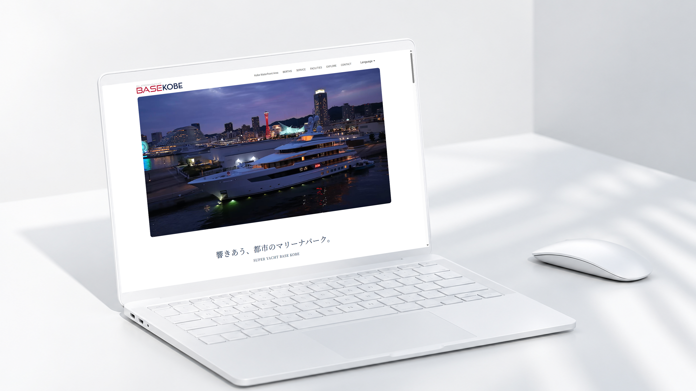
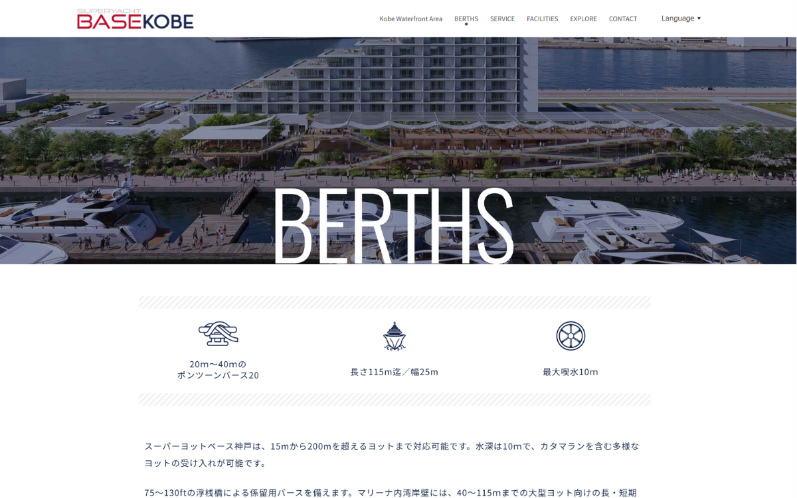
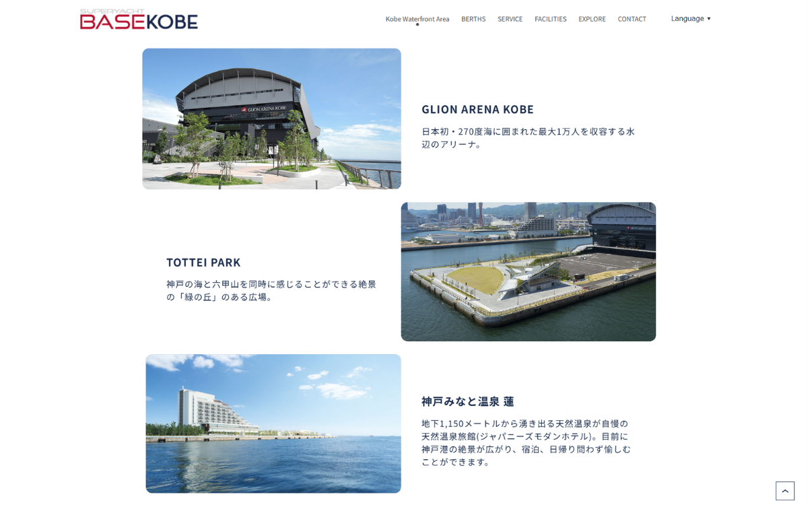

制作概要
Outline
神戸港・新港突堤西地区に誕生する日本屈指のスーパーヨットマリーナ「SUPER YACHT BASE KOBE」の公式サイト。都市型マリーナパークとしての洗練された世界観と、係留・施設・サービスに関する情報を上質に届けるサイト制作を担当しました。
Target
国内外のスーパーヨットオーナー、クルー、マリンレジャー事業者、および神戸ウォーターフロント開発に関心を寄せるVIP・富裕層
Period & Role
デザイン：2ヶ月（Figma / Photoshop）
コーディング：1ヶ月（HTML / CSS / JavaScript / PHP）
担当領域：デザイン（共同制作） / コーディング / CMS（WordPress） / 二か国語対応
Purpose
2027年の一部開業および2028年のグランドオープンに向けたプレステージの確立、マリーナバースや艇購入に関する問い合わせ・リード獲得の基盤構築
内容詳細
Detail
「響きあう、都市のマリーナパーク」
国際港都・神戸の洗練とワールドクラスの品格を両立する。


海と空が交差する瀬戸内のゲートウェイという類まれな都市型マリーナの魅力を伝えるため、広大な余白と上質なタイポグラフィを基調としたラグジュアリーなデザインを採用しました。
世界各国のスーパーヨットクルーやオーナーの閲覧を想定し、スムーズな英語・日本語の多言語切り替えや、係留スペック・ワールドクラスのアメニティ情報を直感的に把握できるセクションレイアウトを設計。
デバイスを問わずシームレスにブランド体験へ没入できるよう、レスポンシブ表示の最適化を徹底し、高付加価値なプロジェクトにふさわしいサイトを制作しました。